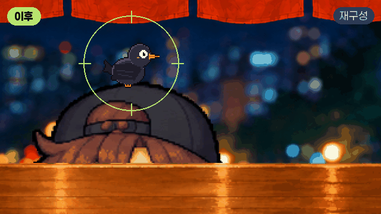

A
끝까지 재생되지 않는 엔딩 크레딧
부모 좌표계진행 순서픽셀 측정

문제크레딧 마지막에 화면이 일찍 꺼지고, 아이리스가 엉뚱한 곳으로 닫히고, 갈색 띠가 남았다.
원인고정 타이머가 끝을 정하고 있었고, 같은 부모 안에서 좌표 변환이 두 번 걸렸다. 갈색 띠는 창과 같이 줄어든 비네트였다.
해결끝맺음을 연출 쪽 한 곳으로 모으고, 녹화한 프레임의 픽셀을 재서 원인을 찾았다.
→ 아이리스 오차 ±1px, 창 바깥 검정 아닌 픽셀 0개전체 과정 보기 →